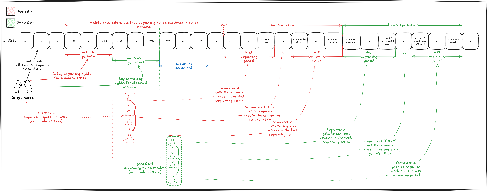
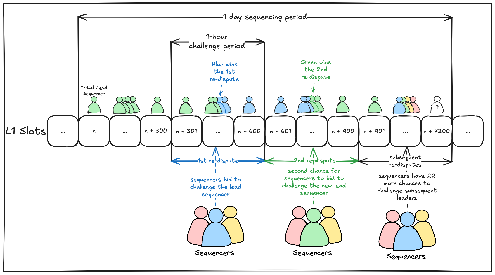
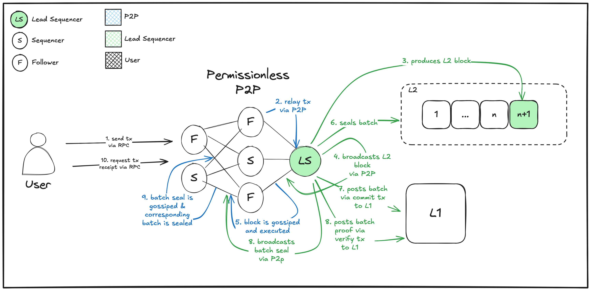

Based sequencing
This section covers the fundamentals of "based" rollups in the context of L2s built with ethrex.
What is a Based Rollup?
A based rollup is a type of Layer 2 (L2) rollup that relies on the Ethereum mainnet (L1) for sequencing and ordering transactions, instead of using its own independent sequencer. This design leverages Ethereum's security and neutrality for transaction ordering, making the rollup more trust-minimized and censorship-resistant.
important
This documentation is about the current state of the based feature development and not about the final implementation. It is subject to change as the feature evolves and their still could be unmitigated issues.
note
This is an extension of the ethrex-L2-Sequencer documentation and is intended to be merged with it in the future.
Components
In addition to the components outlined in the ethrex-L2-Sequencer documentation, the based feature introduces new components to enable decentralized L2 sequencing. These additions enhance the system's ability to operate across multiple nodes, ensuring resilience, scalability, and state consistency.
Sequencer State
note
While not a traditional component, the Sequencer State is a fundamental element of the based feature and deserves its own dedicated section.
The based feature decentralizes L2 sequencing, moving away from a single, centralized Sequencer to a model where multiple nodes can participate, with only one acting as the lead Sequencer at any time. This shift requires nodes to adapt their behavior depending on their role, leading to the introduction of the Sequencer State. The Sequencer State defines two possible modes:
Sequencing: The node is the lead Sequencer, responsible for proposing and committing new blocks to the L2 chain.Following: The node is not the lead Sequencer and must synchronize with and follow the blocks proposed by the current lead Sequencer.
To keep the system simple and avoid intricate inter-process communication, the Sequencer State is implemented as a global state, accessible to all Sequencer components. This design allows each component to check the state and adjust its operations accordingly. The State Updater component manages this global state.
State Updater
The State Updater is a new component tasked with maintaining and updating the Sequencer State. It interacts with the Sequencer Registry contract on L1 to determine the current lead Sequencer and adjusts the node’s state based on this information and local conditions. Its responsibilities include:
- Periodic Monitoring: The State Updater runs at regular intervals, querying the
SequencerRegistrycontract to identify the current lead Sequencer. - State Transitions: It manages transitions between
SequencingandFollowingstates based on these rules:- If the node is designated as the lead Sequencer, it enters the
Sequencingstate. - If the node is not the lead Sequencer, it enters the
Followingstate. - When a node ceases to be the lead Sequencer, it transitions to
Followingand reverts any uncommitted state to ensure consistency with the network. - When a node becomes the lead Sequencer, it transitions to
Sequencingonly if it is fully synced (i.e., has processed all blocks up to the last committed batch). If not, it remains inFollowinguntil it catches up.
- If the node is designated as the lead Sequencer, it enters the
This component ensures that the node’s behavior aligns with its role, preventing conflicts and maintaining the integrity of the L2 state across the network.
Block Fetcher
Decentralization poses a risk: a lead Sequencer could advance the L2 chain without sharing blocks, potentially isolating other nodes. To address this, the OnChainProposer contract (see ethrex-L2-Contracts documentation) has been updated to include an RLP-encoded list of blocks committed in each batch. This makes block data publicly available on L1, enabling nodes to reconstruct the L2 state if needed.
The Block Fetcher is a new component designed to retrieve these blocks from L1 when the node is in the Following state. Its responsibilities include:
- Querying L1: It queries the
OnChainProposercontract to identify the last committed batch. - Scouting Transactions: Similar to how the L1 Watcher monitors deposit transactions, the Block Fetcher scans L1 for commit transactions containing the RLP-encoded block list.
- State Reconstruction: It uses the retrieved blocks to rebuild the L2 state, ensuring the node remains synchronized with the network.
note
Currently, the Block Fetcher is the primary mechanism for nodes to sync with the lead Sequencer. Future enhancements will introduce P2P gossiping to enable direct block sharing between nodes, improving efficiency.
Contracts
In addition to the components described above, the based feature introduces new contracts and modifies existing ones to enhance decentralization, security, and transparency. Below are the key updates and additions:
note
This is an extension of the ethrex-L2-Contracts documentation and is intended to be merged with it in the future.
OnChainProposer (Modified)
The OnChainProposer contract, which handles batch proposals and management on L1, has been updated with the following modifications:
- New Constant:
A public constant
SEQUENCER_REGISTRYhas been added. This constant holds the address of theSequencerRegistrycontract, linking the two contracts for sequencer management. - Modifier Update:
The
onlySequencermodifier has been renamed toonlyLeadSequencer. It now checks whether the caller is the current lead Sequencer, as determined by theSequencerRegistrycontract. This ensures that only the designated leader can commit batches. - Initialization:
The
initializemethod now accepts the address of theSequencerRegistrycontract as a parameter. During initialization, this address is set to theSEQUENCER_REGISTRYconstant, establishing the connection between the contracts. - Batch Commitment:
The
commitBatchmethod has been revised to improve data availability and streamline sequencer validation:- It now requires an RLP-encoded list of blocks included in the batch. This list is published on L1 to ensure transparency and enable verification.
- The list of sequencers has been removed from the method parameters. Instead, the
SequencerRegistrycontract is now responsible for tracking and validating sequencers.
- Event Modification:
The
BatchCommittedevent has been updated to include the batch number of the committed batch. This addition enhances traceability and allows external systems to monitor batch progression more effectively. - Batch Verification:
The
verifyBatchmethod has been made more flexible and decentralized:- The
onlySequencermodifier has been removed, allowing anyone—not just the lead Sequencer—to verify batches. - The restriction preventing multiple verifications of the same batch has been lifted. While multiple verifications are now permitted, only one valid verification is required to advance the L2 state. This change improves resilience and reduces dependency on a single actor.
- The
SequencerRegistry (New Contract)
The SequencerRegistry is a new contract designed to manage the pool of Sequencers and oversee the leader election process in a decentralized manner.
-
Registration:
- Anyone can register as a Sequencer by calling the
registermethod and depositing a minimum collateral of 1 ETH. This collateral serves as a Sybil resistance mechanism, ensuring that only committed participants join the network. - Sequencers can exit the registry by calling the
unregistermethod, which refunds their 1 ETH collateral upon successful deregistration.
- Anyone can register as a Sequencer by calling the
-
Leader Election: The leader election process operates on a round-robin basis to fairly distribute the lead Sequencer role:
- Single Sequencer Case: If only one Sequencer is registered, it remains the lead Sequencer indefinitely.
- Multiple Sequencers: When two or more Sequencers are registered, the lead Sequencer rotates every 32 batches. This ensures that no single Sequencer dominates the network for an extended period.
-
Future Leader Prediction: The
futureLeaderSequencermethod allows querying the lead Sequencer for a batch n batches in the future. The calculation is based on the following logic:Inputs:
sequencers: An array of registered Sequencer addresses.currentBatch: The next batch to be committed, calculated aslastCommittedBatch() + 1from theOnChainProposercontract.nBatchesInTheFuture: A parameter specifying how many batches ahead to look.targetBatch: Calculated ascurrentBatch+nBatchesInTheFuture.BATCHES_PER_SEQUENCER: A constant set to 32, representing the number of batches each lead Sequencer gets to commit.
Logic:
uint256 _currentBatch = IOnChainProposer(ON_CHAIN_PROPOSER).lastCommittedBatch() + 1; uint256 _targetBatch = _currentBatch + nBatchesInTheFuture; uint256 _id = _targetBatch / BATCHES_PER_SEQUENCER; address _leader = sequencers[_id % sequencers.length];Example: Assume 3 Sequencers are registered:
[S0, S1, S2], and the current committed batch is 0:- For batches 0–31:
_id = 0 / 32 = 0, 0 % 3 = 0, lead Sequencer =S0. - For batches 32–63:
_id = 32 / 32 = 1, 1 % 3 = 1, lead Sequencer =S1. - For batches 64–95:
_id = 64 / 32 = 2, 2 % 3 = 2, lead Sequencer =S2. - For batches 96–127:
_id = 96 / 32 = 3, 3 % 3 = 0, lead Sequencer =S0.
This round-robin rotation repeats every 96 committed batches (32 committed batches per Sequencer × 3 Sequencers), ensuring equitable distribution of responsibilities.
Roadmap
Special thanks to Lorenzo and Kubi, George, and Louis from Gattaca, Jason from Fabric, and Matthew from Spire Labs for their feedback and suggestions.
note
This document is still under development, and everything stated in it is subject to change after feedback and iteration. Feedback is more than welcome.
important
We believe that Gattaca's model—permissionless with preconfs using L1 proposers (either directly or through delegations) as L2 sequencers—is the ideal approach. However, this model cannot achieve permissionlessness until the deterministic lookahead becomes available after Fusaka. In the meantime, we consider the Spire approach, based on a Dutch auction, to be the most suitable for our current needs. It is important to note that Rogue cannot implement a centralized mechanism for offering preconfs, so we have chosen to prioritize a permissionless structure before enabling preconfirmations. This initial approach is decentralized and permissionless but not based yet. Although sequencing rights aren't currently guaranteed to the L1 proposer, there will be incentives for L1 proposers to eventually participate in the L2, moving toward Justin Drake's definition.
From the beginning, ethrex was conceived not just as an Ethereum L1 client, but also as an L2 (ZK Rollup). This means anyone will be able to use ethrex to deploy an EVM-equivalent, multi-prover (supporting SP1, RISC Zero, and TEEs) based rollup with just one command. We recently wrote a blog post where we expand this idea more in depth.
The purpose of this document is to provide a high-level overview of how ethrex will implement its based rollup feature.
State of the art
Members of the Ethereum Foundation are actively discussing and proposing EIPs to integrate based sequencing into the Ethereum network. Efforts are also underway to coordinate and standardize the components required for these based rollups; one such initiative is FABRIC.
The following table provides a high-level comparison of different based sequencing approaches, setting the stage for our own proposal.
note
This table compares the different based rollups in the ecosystem based on their current development state, not their final form.
| Based Rollup | Protocol | Sequencer Election | Proof System | Preconfs | Additional Context |
|---|---|---|---|---|---|
| Taiko Alethia (Taiko Labs) | Permissioned | Fixed Deterministic Lookahead | Multi-proof (sgxGeth (TEE), and sgxReth (ZK/TEE)) | Yes | - |
| Gattaca's Based OP (Gattaca + Lambdaclass) | Permissioned | Round Robin | Single Proof (optimistic) | Yes | For phase 1, the Sequencer/Gateway was centralized. For phase 2 (current phase) the Sequencer/Gateway is permissioned. |
| R1 | Permissionless | Total Anarchy | Multi-proof (ZK, TEE, Guardian) | No | R1 is yet to be specified but plans are for it to be built on top of Surge and Taiko's Stack. They're waiting until Taiko is mature enough to have preconfs |
| Surge (Nethermind) | Permissionless | Total Anarchy | Multi-proof (ZK, TEE, Guardian) | No | Surge is built on top of Taiko Alethia but it's tuned enough to be a Stage 2 rollup. Surge is not designed to compete with existing rollups for users or market share. Instead, it serves as a technical showcase, experimentation platform, and reference implementation. |
| Spire (Spire Labs) | Permissionless | Dutch Auction | Single Proof (optimistic) | Yes | - |
| Rogue (LambdaClass) | Permissionless | Dutch Auction | Multi-Proof (ZK + TEE) | Not Yet | We are prioritizing decentralization and permissionlessness at the expense of preconfirmations until the deterministic lookahead is available after Fusaka |
Other based rollups not mentioned will be added later.
Ethrex proposal for based sequencing
According to Justin Drake's definition of "based", being "based" implies that the L1 proposers are the ones who, at the end of the day, sequence the L2, either directly or by delegating the responsibility to a third party.
However, today, the "based" ecosystem is very immature. Despite the constant efforts of various teams, no stack is fully prepared to meet this definition. Additionally, L1 proposers do not have sufficient economic incentives to be part of the protocol.
But there's a way out. As mentioned in Spire's "What is a based rollup?"
The key to this definition is that sequencing is "driven" by a base layer and not controlled by a completely external party.
Following this, our proposal's main focus is decentralization and low operation cost, and we don't want to sacrifice them in favor of preconfirmations or composability.
Considering this, after researching existing approaches, we concluded that a decentralized, permissionless ticket auction is the most practical first step for ethrex's based sequencing solution.
Ultimately, we aim to align with Gattaca's model for based sequencing and collaborate with FABRIC efforts to standardize based rollups and helping interoperability.
Rogue and many upcoming rollups will be following this approach.
Benefits of our approach
The key benefits of our approach to based sequencing are:
- Decentralization and Permissionlessness from the Get-Go: We've decentralized ethrex L2 by allowing anyone to participate in the L2 block proposal; actors willing to participate on it can do this permissionlessly, as the execution ticket auction approach we are taking provides a governance free leader election mechanism.
- Robust Censorship Resistance: By being decentralized and permissionless, and with the addition of Sequencer challenges, we increased the cost of censorship in the protocol.
- Low Operational Cost: We strived to make the sequencer operating costs as low as possible by extending the sequencing window, allowing infrequent L1 finalization for low traffic periods.
- Configurability: We intentionally designed our protocol to be configurable at its core. This allows different rollup setups to be tailored based on their unique needs, ensuring optimal performance, efficiency, and UX.
Key points
Terminology
- Ticket: non-transferable right of a Sequencer to build and commit an L2 batch. One or more are auctioned during each auction period.
- Sequencing Period: the period during which a ticket holder has sequencing rights.
- Auction Period: the period during which the auction is performed.
- Auction Challenge: instance within a sequencing period where lead Sequencer sequencing rights can be challenged.
- Challenge Period: the period during which a lead sequencer can be challenged.
- Allocated Period: the set of contiguous sequencing periods allocated among the winners of the corresponding auctioning period -during an auctioning period, multiple sequencing periods are auctioned, the set of these is the allocated period.
- L2 batch: A collection of L2 blocks submitted to L1 in a single transaction.
- Block/Batch Soft-commit Message: A signed P2P message from the Lead Sequencer publishing a new block or sealed batch.
- Commit Transaction: An L1 transaction submitted by the Lead Sequencer to commit to an L2 batch execution. It is also called Batch Commitment.
- Sequencer: An L2 node registered in the designated L1 contract.
- Lead Sequencer: The Sequencer currently authorized to build L2 blocks and post L2 batches during a specific L1 block.
- Follower: Non-Lead Sequencer nodes, which may be Sequencers awaiting leadership or passive nodes.
How it will work
As outlined earlier, sequencing rights for future blocks are allocated through periodic ticket auctions. To participate, sequencers must register and provide collateral. Each auction occurs during a designated auction period, which spans a defined range of L1 blocks. These auctions are held a certain number of blocks in advance of the allocated period.
During each auction period, a configurable number of tickets are auctioned off. Each ticket grants its holder the right to sequence transactions during one sequencing period within the allocated period. However, at the time of the auction, the specific sequencing period assigned to each ticket remains undetermined. Once the auction period ends, the sequencing periods are randomly assigned (shuffled) among the ticket holders, thereby determining which sequencing period each ticket corresponds to.
Parameters like the amount of tickets auctioned (i.e. amount of sequencing periods per allocated period), the duration of the auction periods, the duration of the sequencing periods, and more, are configurable. This configurability is not merely a feature but a deliberate and essential design choice. The complete list of all configurable parameters can be found under the “Protocol details” section.

- Sequencers individually opt in before auction period
nends, providing collateral via an L1 contract. This registration is a one-time process per Sequencer. - During the auction, registered Sequencers bid for sequencing rights for a yet-to-be-revealed sequencing period within the allocated period.
- At the auction's conclusion, sequencing rights for the sequencing periods within the allocated period are assigned among the ticket holders.
- Finally, Sequencers submit L2 batch transactions to L1 during their assigned sequencing period (note: this step does not immediately follow step 3, as additional auctions and sequencing might occur in-between).
In each sequencing period, the Lead Sequencer is initially determined through a bidding process. However, this position can be contested by other Sequencers who are willing to pay a higher price than the winning bid. The number of times such challenges can occur within a single sequencing period is configurable, allowing for control over the stability of the leadership. Should a challenge succeed, the challenging Sequencer takes over as the Lead Sequencer for the remainder of the period, and the original Lead Sequencer is refunded a portion of their bid corresponding to the time left in the period. For example, if a challenge is successful at the midpoint of the sequencing period, the original Lead Sequencer would be refunded half of their bid.
The following example assumes a sequencing period of 1 day, 1 auction challenge per hour with challenge periods of 1 hour.

- Auction winner (Sequencer green) starts as the lead Sequencer of the sequencing period.
- No one can challenge the lead in the first hour.
- During the second hour, the first auction challenge starts, and multiple Sequencers bid to challenge the lead. Finally, the lead Sequencer is overthrown and the new lead (Sequencer blue) starts sequencing.
- In the third hour a new auction challenge opens and the former lead Sequencer takes back the lead.
- Until the last hour of the sequencing period, the same cycle repeats having many leader changes.
To ensure L2 liveness in this decentralized protocol, Sequencers must participate in a peer-to-peer (P2P) network. The diagram below illustrates this process:

- A User: sends a transaction to the network.
- Any node: Gossips in the P2P a received transaction. So every transaction lives in a public distributed mempool
- The Lead Sequencer: Produces an L2 block including that transaction.
- The Lead Sequencer: Broadcasts the L2 block, including the transaction, to the network via P2P.
- Any node: Executes the block, gossips it, and keeps its state up to date.
- The Lead Sequencer: Seals the batch in L2.
- The Lead Sequencer: Posts the batch to the L1 in a single transaction.
- The Lead Sequencer: Broadcasts the "batch sealed" message to the network via P2P.
- Any node: Seals the batch locally and gossips the message.
- A User: Receives a non-null receipt for the transaction.
Protocol details
Additional Terminology
- Next Batch: The L2 batch being built by the lead Sequencer.
- Up-to-date Nodes: Nodes that have the last committed batch in their storage and only miss the next batch.
- Following: We say that up-to-date nodes are following the lead Sequencer.
- Syncing: Nodes are syncing if they are not up-to-date. They’ll stop syncing after they reach the following state.
- Verify Transaction: An L1 transaction submitted by anyone to verify a ZK proof to an L2 batch execution.
Network participants
- Sequencer Nodes: Nodes that have opted in to serve as Sequencers.
- Follower Nodes: State or RPC Nodes.
- Prover Nodes:
By default, every ethrex L2 node begins as a Follower Node. A process will periodically query the L1 smart contract registry for the Lead Sequencer's address and update each node's state accordingly.
Network parameters
A list of all the configurable parameters of the network.
- Sequencing period duration
- Auction period duration
- Number of sequencing periods in an allocated period
- Time between auction and allocated period
- L2 block time
- Minimum collateral in ETH for Sequencers registration
- Withdrawal delay for Sequencers that quit the protocol
- Initial ticket auction price multiplier
- Batch verification time limit
- Amount of auction challenges within a sequencing period
- Challenge period duration
- Time between auction challenges
- Challenge price multiplier
Lead Sequencer election
- Aspiring Lead Sequencers must secure sequencing rights through a Dutch auction in advance, enabling them to post L2 batches to L1.
- Sequencing rights are tied to tickets: one ticket grants the right to sequence and post batches during a specific sequencing period.
- For each sequencing period within an allocated period, sequencing rights are randomly assigned from the pool of ticket holders.
- Each auction period determines tickets for the nth epoch ahead (configurable).
- Once Ethereum incorporates deterministic lookahead (e.g., EIP-7917), the Lead Sequencer for a given L1 slot will be the current proposer, provided they hold a ticket.
Auction challenges
- During a sequencing period, other Sequencers can pay a higher price than the winning bid to challenge the Lead Sequencer.
- This can only happen a configurable number of times per sequencing period.
- After a successful challenge, the current Lead Sequencer is replaced by the challenging sequencer for the rest of the Sequencing Period and is refunded the portion of its bid corresponding to the remaining sequencing period (e.g. half of its bid if it loses half of its sequencing period).
Sequencers registry
- L1 contract that manages Sequencer registration and ticket auctions for sequencing rights.
- Sequencers can register permissionlessly by providing a minimum collateral in ETH.
- Sequencers may opt out of an allocated period by not purchasing tickets for that period.
- Sequencers can unregister and withdraw their collateral after a delay.
Lead Sequencers role
- Build L2 blocks and post L2 batches to the L1 within the sequencing period.
- Broadcast to the network:
- Transactions.
- Sequenced blocks as they are built.
- Batch seal messages to prompt the network to seal the batch locally.
- Serve state.
Follower nodes role
- Broadcast to the network:
- Transactions.
- Sequenced blocks.
- Batch seal messages.
- Store incoming blocks sequentially.
- Seal batches upon receiving batch seal messages (after storing all batch blocks).
- Serve state.
- Monitor the L1 contract for batch updates and reorgs.
Prover nodes role
- For this stage, it is the Sequencers' responsibility to prove their own batches.
- The prover receives the proof generation inputs of a batch from another node and returns a proof.
Batch commitment/proposal
tip
To enrich the understanding of this part, we suggest reading ethrex L2 High-Level docs as this only details the diff with what we already have.
- Only lead Sequencer can post batches.
- Lead Sequencer batches are accepted during their sequencing period and rejected outside this period.
- Batch commitment now includes posting the list of blocks in the batch to the L1 for data availability.
Batch verification
tip
To enrich the understanding of this part, we suggest reading ethrex L2 High-Level docs as this only details the diff with what we already have.
- Anyone can verify batches.
- Only one valid verification is required to advance the network.
- Valid proofs include the blocks of the batch being verified.
- In this initial version, the lead Sequencer is penalized if they fail to correctly verify the batches they post.
P2P
- Ethrex's L1 P2P network will be used to gossip transactions and for out-of-date nodes to sync.
- A new capability will be added for gossipping L2 blocks and batch seal messages (
NewBlockandBatchSealed). - The
NewBlockmessage includes an RLP-encoded list of transactions in the block, along with metadata for re-execution and validation. It is signed, and receivers must verify the signature (additional data may be required in practice). - The
SealedBatchmessage specifies the batch number and the number of blocks it contains (additional data may be needed in practice). - Follower Nodes must validate all messages. They add
NewBlocks to storage sequentially and seal the batch when theSealedBatchmessage arrives. If a node's current block isnand it receives blockn + 2, it queuesn + 2, waits forn + 1, adds it, then processesn + 2. Similarly, a SealedBatch message includes block numbers, and the node delays sealing until all listed blocks are stored.
Syncing
Nodes that join a live network will need to sync up to the latest state.
For this we'll divide nodes into two different states:
- Following nodes: These will keep up-to-date via the based P2P.
- Syncing nodes: These will sync via 2 different mechanisms:
- P2P Syncing: This is the same as full-sync and snap-sync on L1, but with some changes.
- L1 Syncing: Also used by provers to download batches from the L1.
- In practice, these methods will compete to sync the node.
Downsides
Below we list some of the risks and known issues we are aware of that this protocol introduces. Some of them were highlighted thanks to the feedback of different teams that took the time to review our first draft.
- Inconsistent UX: If a Sequencer fails to include its batch submit transaction in the L1, the blocks it contains will simply be reorged out once the first batch of the next sequencer is published. Honest sequencers can avoid this by not building new batches some slots before their turn ends. The next Sequencer can, in turn, start building their first batch earlier to avoid dead times. This is similar to Taiko’s permissioned network, where sequencers coordinate to stop proposing 4 slots before their turn ends to avoid reorgs.
- Batch Stealing: Lead Sequencers that fail to publish their batches before their sequencing period ends might have their batches "stolen" by the next Lead Sequencer, which can republish those batches as their own. We can mitigate in the same way as the last point.
- Long Finalization Times: Since publishing batches to L1 is infrequent, users might experience long finalization times during low traffic periods. We can solve this by assuming a transaction in an L2 block transmitted through P2P will eventually be published to L1, and punishing Sequencers that don't include some of their blocks in a batch.
- Temporary Network Blinding: A dishonest Sequencer may blind the network if they don't gossip blocks nor publish the batches to the L1 as part of the commit transactions' calldata. While the first case alone is mitigated through an L1 syncing mechanism, if the necessary data to sync is not available we can't rely on it. In this case, the prover ensures this doesn't happen by requiring the batch as a public input to the proof verification. That way, the bad batch can't be verified, and will be reverted.
- High-Fee Transactions Hoarding: A dishonest Sequencer might not share high-fee transactions with the Lead Sequencer with the hope of processing them once it's their turn to be Lead Sequencer. This is a non-issue, since transaction senders can simply propagate their transaction themselves, either by sending it to multiple RPC providers, or to their own node.
- Front-running and Sandwiching Attacks: Lead Sequencers have the right to reorder transactions as they like and we expect they'll use this to extract MEV, including front-running and sandwiching attacks, which impact user experience. We don't have plans to address this at the protocol level, but we expect solutions to appear at the application level, same as in L1.
- No Sequencers Scenario: If a sequencing period has no elected Lead Sequencer, we establish Full Anarchy during that period, so anyone can advance the chain. This is a last resort, and we don't expect this happening in practice.
Conclusion
To preserve decentralization and permissionlessness, we chose ticket auctions for leader election, at the expense of preconfirmations and composability.
As mentioned at the beginning, this approach does not fully align with Justin Drake's definition of "based" rollups but is "based enough" to serve as a starting point. Although the current design cannot guarantee that sequencing rights are assigned exclusively to the L1 proposer for each slot, we're interested in achieving this, and will do so once the conditions are met, namely, that L1 proposer lookahead is available.
So what about "based" Ethrex tomorrow? Eventually, there will be enough incentives for L1 proposers to either run their own L2 Sequencers or delegate their L1 rights to an external one. At that stage, the auction and assignment of L2 sequencing rights will be linked to the current L1 proposer or their delegated Sequencer. Periods may also adjust as lookahead tables, such as the Deterministic Lookahead Proposal or RAID, become viable.
This proposal is intentionally minimalistic and adaptable for future refinements. How this will change and adapt to future necessities is something we don't know right now, and we don't care about it until those necessities arrive; this is Lambda's engineering philosophy.
Further considerations
The following are things we are looking to tackle in the future, but which are not blockers for our current work.
- Ticket Pricing Strategies.
- Delegation Processes.
- Preconfirmations.
- Bonding.
- L1 Reorgs Handling.
References and acknowledgements
The following links, repos, and projects have been important in the development of this document, we have learned a lot from them and want to thank and acknowledge them.
Context
Intro to based rollups
- Based Rollups by Justin Drake (current accepted definition)
- Based Rollups by Spire
- Based Rollups by Taiko
- Based Rollups by Gattaca
Based rollups benefits
Based rollups + extra steps
- Based Ticketing Rollup by George Spasov
- Based Contestable Rollup by Taiko (Taiko Alethia)
- Native Based Rollup by Taiko (Taiko Gwyneth)
Misc
Execution tickets
- Execution Tickets
- Execution Tickets vs Execution Auctions
- Economic Analysis of Execution Tickets
- Beyond the Stars: An Introduction to Execution Tickets on Ethereum
Current based rollups
- Rogue (LambdaClass)
- Surge (Nethermind)
- Taiko Alethia (Taiko Labs)
- Whitelisted preconfers:
- Based OP (Gattaca + Lambdaclass)
- R1
- Minimal Rollup (OpenZeppelin)